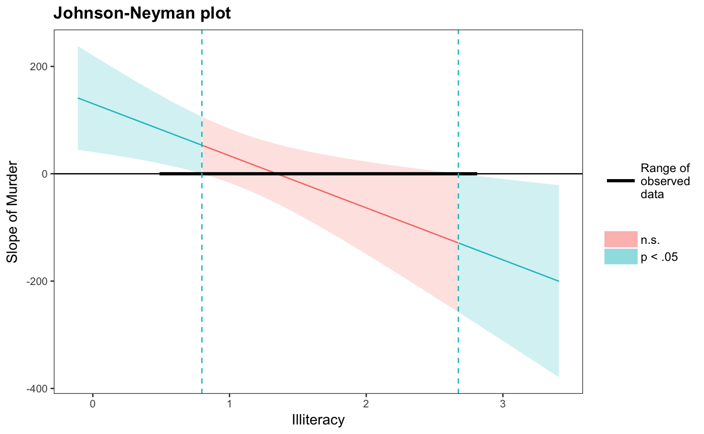

johnson_neyman finds so-called "Johnson-Neyman" intervals for
understanding where simple slopes are significant in the context of
interactions in multiple linear regression.
johnson_neyman(model, pred, modx, vmat = NULL, alpha = 0.05, plot = TRUE, control.fdr = FALSE, line.thickness = 0.5, df = "residual", digits = getOption("jtools-digits", 2))
| model | A regression model of type |
|---|---|
| pred | The predictor variable involved in the interaction. |
| modx | The moderator variable involved in the interaction. |
| vmat | Optional. You may supply the variance-covariance matrix of the coefficients yourself. This is useful if you are using robust standard errors, as you could if using the sandwich package. |
| alpha | The alpha level. By default, the standard 0.05. |
| plot | Should a plot of the results be printed? Default is |
| control.fdr | Logical. Use the procedure described in Esarey & Sumner (2017) to limit the false discovery rate? Default is FALSE. See details for more on this method. |
| line.thickness | How thick should the predicted line be? This is passed to `geom_path` as the `size` argument, but because of the way the line is created, you cannot use `geom_path` to modify the output plot yourself. |
| df | How should the degrees of freedom be calculated for the critical test statistic? Previous versions used the large sample approximation; if alpha was .05, the critical test statistic was 1.96 regardless of sample size and model complexity. The default is now "residual", meaning the same degrees of freedom used to calculate p values for regression coefficients. You may instead choose any number or "normal", which reverts to the previous behavior. The argument is not used if `control.fdr = TRUE`. |
| digits | An integer specifying the number of digits past the decimal to
report in the output. Default is 2. You can change the default number of
digits for all jtools functions with
|
The two numbers that make up the interval.
A dataframe with predicted values of the predictor's slope and lower/upper bounds of confidence bands if you would like to make your own plots
The ggplot object used for plotting. You can tweak the
plot like you could any other from ggplot.
The interpretation of the values given by this function is important and not always immediately intuitive. For an interaction between a predictor variable and moderator variable, it is often the case that the slope of the predictor is statistically significant at only some values of the moderator. For example, perhaps the effect of your predictor is only significant when the moderator is set at some high value.
The Johnson-Neyman interval provides the two values of the moderator at which the slope of the predictor goes from non-significant to significant. Usually, the predictor's slope is only significant outside of the range given by the function. The output of this function will make it clear either way.
One weakness of this method of probing interactions is that it is analagous to making multiple comparisons without any adjustment to the alpha level. Esarey & Sumner (2017) proposed a method for addressing this, which is implemented in the `interactionTest` package. This function implements that procedure with modifications to the `interactionTest` code (that package is not required to use this function). If you set `control.fdr = TRUE`, an alternative *t* statistic will be calculated based on your specified alpha level and the data. This will always be a more conservative test than when `control.fdr = FALSE`. The printed output will report the calculated critical *t* statistic.
This technique is not easily ported to 3-way interaction contexts. You could,
however, look at the J-N interval at two different levels of a second
moderator. This does forgo a benefit of the J-N technique, which is not
having to pick arbitrary points. If you want to do this, just use the
sim_slopes function's ability to handle 3-way interactions
and request Johnson-Neyman intervals for each.
Bauer, D. J., & Curran, P. J. (2005). Probing interactions in fixed and multilevel regression: Inferential and graphical techniques. Multivariate Behavioral Research, 40(3), 373-400. http://doi.org/10.1207/s15327906mbr4003_5
Esarey, J., & Sumner, J. L. (2017). Marginal effects in interaction models: Determining and controlling the false positive rate. Comparative Political Studies, 1–33. Advance online publication. https://doi.org/10.1177/0010414017730080
Johnson, P.O. & Fay, L.C. (1950). The Johnson-Neyman technique, its theory and application. Psychometrika, 15, 349-367. http://doi.org/10.1007/BF02288864
Other interaction tools: interact_plot,
probe_interaction, sim_slopes
# Using a fitted lm model states <- as.data.frame(state.x77) states$HSGrad <- states$`HS Grad` fit <- lm(Income ~ HSGrad + Murder*Illiteracy, data = states) johnson_neyman(model = fit, pred = Murder, modx = Illiteracy)#> JOHNSON-NEYMAN INTERVAL #> #> The slope of Murder is p < .05 when Illiteracy is OUTSIDE this interval: #> [0.8, 2.67] #> Note: The range of observed values of Illiteracy is [0.5, 2.8] #>